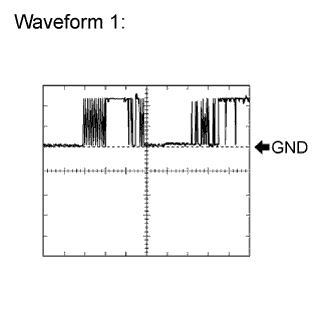
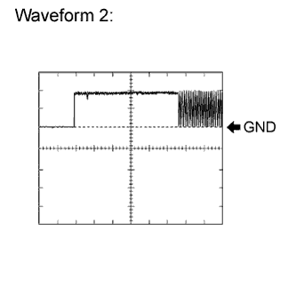
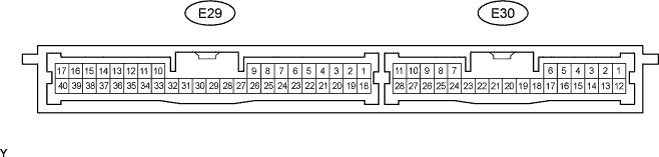
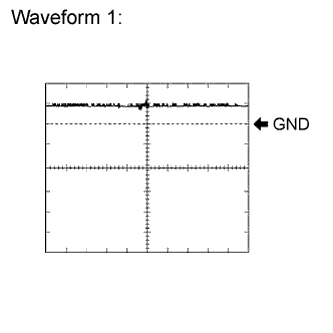
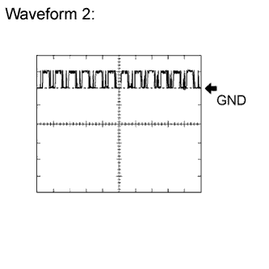
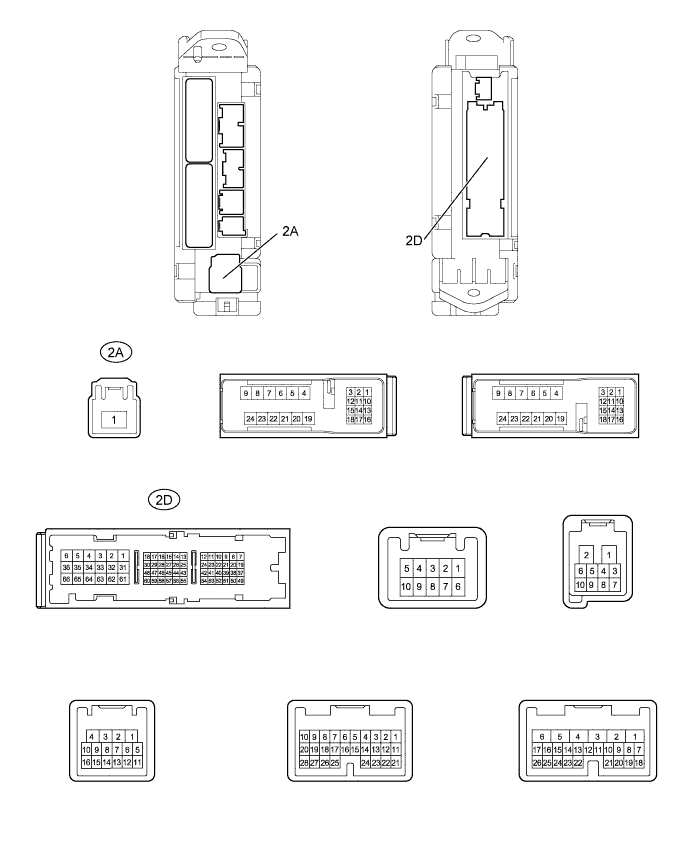

ENGINE IMMOBILISER SYSTEM > TERMINALS OF ECU |
| CHECK ENGINE SWITCH |
Disconnect the E18 switch connector.
Measure the resistance according to the value(s) in the table below.
| Terminal No. (Symbol) | Wiring Color | Terminal Description | Condition | Specified Condition |
| E18-5 (GND) - Body ground | BR - Body ground | Ground | Always | Below 1 Ω |
Reconnect the E18 switch connector.
Measure the resistance and voltage according to the value(s) in the table below.
| Terminal No. (Symbol) | Wiring Color | Terminal Description | Condition | Specified Condition |
| E18-8 (AGND) - Body ground | L - Body ground | Ground | Always | Below 1 Ω |
| E18-14 (VC5) - E18-8 (AGND) | P - L | Power supply | Key not in cabin | Below 1 V |
| Engine switch pressed* | 4.6 to 5.4 V | |||
| E18-10 (CODE) - E18-8 (AGND) | G - L | Demodulated signal of key code output | Key not in cabin | Below 1 V |
| Engine switch pressed and key held close to engine switch* | Pulse generation (see waveform 1) | |||
| E18-9 (TXCT) - E18-8 (AGND) | SB - L | Key code input signal | Key not in cabin | Below 1 V |
| Engine switch pressed and key held close to engine switch* | Pulse generation (see waveform 2) |
 |
Using an oscilloscope, check waveform 1.
| Item | Content |
| Terminal No. (Symbol) | E18-10 (CODE) - E18-8 (AGND) |
| Tool Setting | 2 V/DIV., 20 msec./DIV. |
| Condition | Engine switch pressed and key held close to engine switch* |
 |
Using an oscilloscope, check waveform 2.
| Item | Content |
| Terminal No. (Symbol) | E18-9 (TXCT) - E18-8 (AGND) |
| Tool Setting | 2 V/DIV., 20 msec./DIV. |
| Condition | Engine switch pressed and key held close to engine switch* |
| CHECK CERTIFICATION ECU (SMART KEY ECU ASSEMBLY) |

Disconnect the E29 ECU connector.
Measure the resistance and voltage according to the value(s) in the table below.
| Terminal No. (Symbol) | Wiring Color | Terminal Description | Condition | Specified Condition |
| E29 -17 (E) - Body ground | W-B - Body ground | Ground | Always | Below 1 Ω |
| E29-1 (+B) - E29-17 (E) | B - W-B | +B power supply | Always | 11 to 14 V |
| E29-18 (IG) - E29-17 (E) | B - W-B | Ignition power supply | Engine switch off | Below 1 V |
| Engine switch on | 11 to 14 V |
Reconnect the E29 ECU connector.
Measure the resistance and voltage according to the value(s) in the table below.
| Terminal No. (Symbol) | Wiring Color | Terminal Description | Condition | Specified Condition |
| E29-40 (AGND) - Body ground | L - Body ground | Engine switch ground | Always | Below 1 Ω |
| E29-30 (VC5) - E29-40 (AGND) | P - L | Engine switch power supply | Key not in cabin | Below 1 V |
| Engine switch pressed* | 4.6 to 5.4 V | |||
| E29-9 (CODE) - E29-40 (AGND) | G- L | Engine switch CODE input | Key not in cabin | Below 1 V |
| Engine switch pressed and key held close to engine switch* | Pulse generation (see waveform 1) | |||
| E29-8 (TXCT) - E29-40 (AGND) | SB - L | Engine switch TX output | Key not in cabin | Below 1 V |
| Engine switch pressed and key held close to engine switch* | Pulse generation (see waveform 2) |
Using an oscilloscope, check waveform 1.
| Item | Content |
| Terminal No. (Symbol) | E29-9 (CODE) - E29-40 (AGND) |
| Tool Setting | 2 V/DIV., 20 msec./DIV. |
| Condition | Engine switch pressed and key held close to engine switch* |
Using an oscilloscope, check waveform 2.
| Item | Content |
| Terminal No. (Symbol) | E29-8 (TXCT) - E29-40 (AGND) |
| Tool Setting | 2 V/DIV., 20 msec./DIV. |
| Condition | Engine switch pressed and key held close to engine switch* |
| CHECK ID CODE BOX (IMMOBILISER CODE ECU) |
Disconnect the E28 box connector.
Measure the resistance and voltage according to the value(s) in the table below.
| Terminal No. (Symbol) | Wiring Color | Terminal Description | Condition | Specified Condition |
| E28-8 (GND) - Body ground | W-B - Body ground | Ground | Always | Below 1 Ω |
| E28-1 (+B) - E28-8 (GND) | B - W-B | +B power supply | Always | 11 to 14 V |
Reconnect the E28 box connector.
Measure the voltage according to the value(s) in the table below.
| Terminal No. (Symbol) | Wiring Color | Terminal Description | Condition | Specified Condition |
| E28-5 (EFII) - E28-8 (GND) | W - W-B | ECM input signal | Engine switch off | Below 1 V |
| Engine switch on (IG) | Pulse generation (see waveform 1) | |||
| E28-6 (EFIO) - E28-8 (GND) | R - W-B | ECM output signal | Engine switch off | Below 1 V |
| Engine switch on (IG) | Pulse generation (see waveform 2) |
 |
Using an oscilloscope, check waveform 1.
| Item | Content |
| Terminal No. (Symbol) | E28-5 (EFII) - E28-8 (GND) |
| Tool Setting | 10 V/DIV., 100 msec./DIV. |
| Condition | Engine switch on (IG) |
 |
Using an oscilloscope, check waveform 2.
| Item | Content |
| Terminal No. (Symbol) | E28-6 (EFIO) - E28-8 (GND) |
| Tool Setting | 10 V/DIV., 100 msec./DIV. |
| Condition | Engine switch on (IG) |
| CHECK MAIN BODY ECU (COWL SIDE JUNCTION BLOCK LH) |

Disconnect the 2D and 2A ECU connectors.
Measure the resistance and voltage according to the value(s) in the table below.
| Terminal No. (Symbol) | Wiring Color | Terminal Description | Condition | Specified Condition |
| 2D-62 (GND2) - Body ground | W-B - Body ground | Ground | Always | Below 1 Ω |
| 2D-8 (ACC) - 2D-62 (GND2) | GR - W-B | ACC power supply | Engine switch off | Below 1 V |
| Engine switch on (ACC) | 11 to 14 V | |||
| 2A-1 (IG) - 2D-62 (GND2) | B - W-B | IG power supply | Engine switch off | Below 1 V |
| Engine switch on (IG) | 11 to 14 V |
| CHECK STEERING LOCK ACTUATOR (STEERING LOCK ECU) |
Disconnect the E26 ECU connector.
Measure the resistance and voltage according to the value(s) in the table below.
| Terminal No. (Symbol) | Wiring Color | Terminal Description | Condition | Specified Condition |
| E26-2 (SGND) - Body ground | BR - Body ground | Ground | Always | Below 1 Ω |
| E26-1 (GND) - Body ground | W-B - Body ground | Ground | Always | Below 1 Ω |
| E26-7 (B) - Body ground | R - Body ground | +B power supply | Always | 11 to 14 V |
| E26-6 (IG2) - Body ground | B - Body ground | Ignition power supply | Engine switch off | Below 1 V |
| Engine switch on (IG) | 11 to 14 V |